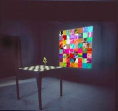

Ztylo - Diseño Gráfico
Diseño Multimedia e Interacción

La característica más importante que define al Multimedia Interactivo como un innovador medio de comunicación es precisamente la Interactividad. La medición de dicha variable marca su principal diferencia con respecto de los medios tradicionales que también son "multimedia": La televisión, el cine, el video o simplemente un juego de lotería tradicional. La interactividad no se encuentra definida por el número de "clics" que efectúe el usuario-receptor sino por el involucramiento que pueda lograr con los mensajes, las estructuras de los mismos, las formas de participación, la capacidad de innovación y el particular ritmo en la comunicación. Busquemos y encontremos pues aquellos caminos para convertir un programa de Multimedia en un medio completo de comunicación, con ciertas funciones sociales, en un medio creativo y realmente interactivo.
Hablando del primer momento, no es el "clic" con el ratón la única opción que puede tener un usuario de Multimedia para cambiar de actividad, puede ser la generación de un sonido, un movimiento determinado, el tecleo de una frase, de una palabra, la respuesta a una pregunta, el triunfo en un juego.
Hablando del segundo momento (la acción nueva generada tras la elección de la liga) existen tantas posibilidades como acciones interactivas en la vida, como la capacidad creativa del autor, como la imaginación del diseñador: una animación en caricatura donde el usuario crea los diálogos, algún personaje al cual diseñar, vestir, modificar, manipular, fotografías qué intercambiar o construir como rompecabezas, frases qué completar o adivinar, viajes para disfrutar, competencias qué ganar.
Lo anterior se engloba pues en dos conceptos básicos:
La empatía, nuestra capacidad para tomar el lugar de nuestro posible receptor/usuario y cubrir con sus expectativas y "esperanzas" al adquirir el posible programa.
La creatividad multimedia, que nos permita crear secciones, personajes, acciones virtuales originales y envolventes.
Revisemos pues ahora, algunos rasgos que un programa de Multimedia interactivo debería tener para constituirse como medio efectivo de comunicación, enfatizando en su función como medio de aprendizaje:
Motivación. El usuario debe sentirse estimulado en todo momento para utilizar el programa y experimentar con él.
Inmersión. A pesar de haber distracciones de contexto, el programa debe ser lo suficientemente interesante como para hacer permanecer al usuario por un lapso considerable de tiempo, involucrado con las posibilidades de acción, información, imagen, etc.
 Reflexión. Los mensajes que al receptor lleguen, de preferencia deberán llevar una dosis de cuestionamiento o proceso reflexivo que lleven a la persona a otros pensamientos respecto de lo que experimentó con el programa, a conclusiones posteriores que pueda aplicar en determinado momento a su vida cotidiana.
Colaboración. No solamente el programa podrá ayudar a entablar una relación con el mensaje en sí o con la computadora, lo ideal es que contribuya mediante su estructura a estimular una relación del usuario con su contexto, con otras personas o con otros usuarios para poder compartir lo aprendido o experimentado y llevarlo a la realidad. Por ejemplo, un programa interactivo sobre geología podrá incluir entre sus actividades la búsqueda de diferentes rocas para ver, sentir y comparar su textura, color, porosidad, etc.
Control. El receptor de los mensajes debe ser también modificador o re-modelador de los mismos, debe decidir sobre el orden de la información que recibe, sobre su estructura, sobre la elección de opciones.
Reto. Cualquier meta, al tornarse sencilla de lograr pierde su encanto. Es mucho más interesante presentar actividades difíciles de resolver para interesar al usuario, para involucrarlo con el mensaje o actividad, para estimular su pensamiento creativo.
Juego. Es una forma de actuar que frecuentemente se asocia con la niñez; y no necesariamente es exclusiva de la primera etapa de la vida. El juego es una de las maneras más efectivas de aprender por el tipo y la velocidad en la actividad mental que genera. Es por ello un medio bastante efectivo de comunicación multimedia.
Curiosidad. La inquietud por seguir buscando y experimentando, la sensación de nunca estar conforme, eso es lo que hay que proponer cuando se trata de diseñar cualquier programa de Multimedia Interactivo.
Fantasía. Alimentar la imaginación y la relación realidad-virtualidad, es otro de los retos del multimedia, que no por concentrarse como un medio de imágenes, sonidos y estímulos variados limita este proceso imaginativo, por el contrario, con una buena concepción de diseño, puede estimularlo con bastante efectividad.